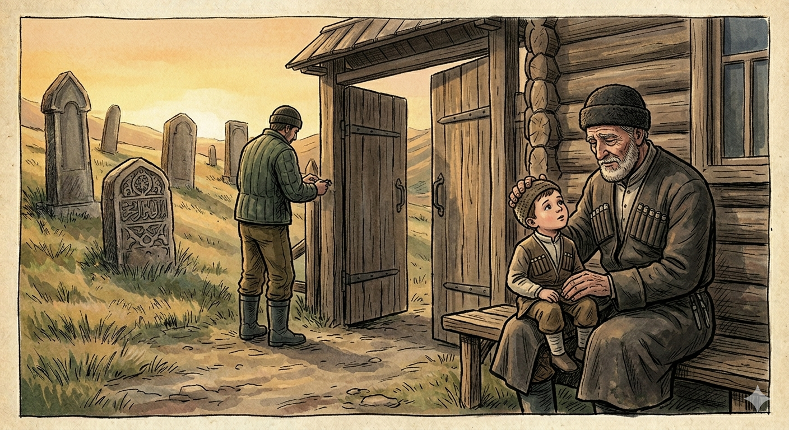

И.А. Дахкильгов. Хьехаме дувцарш - поучительные рассказы-притчи.
И.А. Дахкильгов. Хьехаме дувцарш - поучительные рассказы-притчи. Из ингушского фольклора.

Са чӀир лохаргъя укхо
Цхьа миска воккха саг хиннав дилла коанаӀарах доаллача гӀанда тӀа вагӀаш. Ший виӀий-воӀ, зӀамига кӀаьнк, кара а воагӀавеш, цун кертах кулг а хьекхаш вагӀаш. Ше кулг массаза хьокха оалаш хиннад цо: - Касста хьалкхувргва, дадена дукха вахарг, са чӀир лохаргъя, дадена дукхавахарго. Цар цӀенах боаллаш цхьаккха пхьа хиннабац. Юрта цхьана бахача наха дика ма хой из. Цудухьа цецбувлаш хиннаб нах цу воккхача саго ювцача чӀирах. ТӀеххьара хаьттад цар цунга, из фу чӀир я, аьнна. Оалаш хиннадац воккхача саго. ТӀаккха йоккхача сагага хаьттад, цо аьннад: - Тха воӀ во ва тхоца. Иштта цунца хургва цунна ваь вола из кӀаьнк а. Иштта из тха воӀа хургйолаш йола чӀир я тха воккхача саго ювцашъяр.
РУССКИЙ
Он отомстит за меня
Один старик часами просиживал на лавочке у ворот. Какая-то печаль одолевала его. Он сажал на колени внучонка, поглаживал его по головке и при этом приговаривал: "Мой дорогой, скоро вырастешь, скоро отомстишь за своего деда". Их семья не имела никаких кровников, что хорошо было известно в селе. Понятно, сельчане удивлялись словам старика. Наконец, они решились и спросили его, о какой такой мести он говорит. На эти вопросы старик отмалчивался. Тогда спросили его старуху и она ответила: "Наш сын плохо с нами, стариками, обращается. Когда наш внук вырастет, он, конечно, пойдет в своего отца и тем самым отомстит за нас. Об этой-то мести и говорит мой старик".
ENGLISH
He will avenge me
An old man would sit for hours on a bench by the gate. A sense of sadness overwhelmed him. He would sit his little grandson on his lap, stroke his head and say: "My dear boy, you'll grow up soon, and soon you'll avenge your grandfather." Their family had no blood enemies, a fact well known throughout the village. Understandably, the villagers were puzzled by the old man's words. Finally, they plucked up the courage to ask him what sort of revenge he was talking about. The old man remained silent in response to these questions. So they asked his wife, and she replied: "Our son treats us old folk badly. When our grandson grows up, he will, of course, take after his father and thus avenge us. That is the revenge my old man is talking about".
НОХЧИЙН
ПОГОВОРКИ
Барзкъо, метто саг магӀавоаккх; метто, керто эгӀавоаккх. - Язык и одежда ведут человека на почетное место; язык и ум сгоняют с него. Вахара санна валара а эш ираз. - Счастье одинаково нужно и для жизни и для смерти. Да дика - дезал дика. - Хорош хозяин, хороша и семья (двор). Дика лоалахо - тешам, во лоалахо - эшам. - Хороший сосед - прибыток, плохой - убыток. Цхьан церга тӀа мара сецаяц ворда чарх. - Сколь ни крутись колесо арбы, оно всегда остановится на одной из спиц. Ӏа сога "говра хьовзае" ях, со говро удаву. - Ты говоришь "гарцуй", а меня конь сам несет. ДӀадилар накъадаьннад, дехкар дайнад. - Отложил - пригодилось, продал - пропало. Рузкъа Ӏоаде Ӏомавеш санна рузкъана хьурмат де Ӏомаве веза. - Учишь наживать богатство, учи его оберегать. Хозача дешо Ӏурга чура текхарг баьккхаб. - Ласковое слово и змею из норки выманило. Хьакхашта ваьккха лай хьалмагӀа гӀийртав. - Дай рабу послабление, он и тамадой захочет стать. Сабар - Даьлагара, сихал - шайтӀагара. - Спокойствие от бога Дялы, горячность (вспыльчивость) от шайтана.